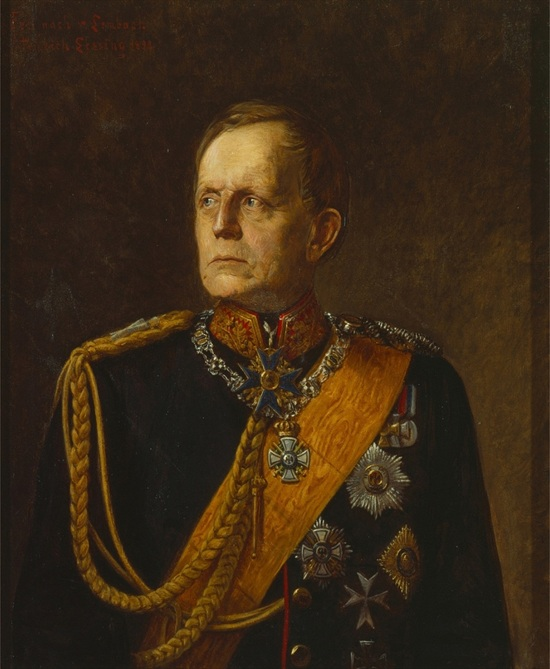
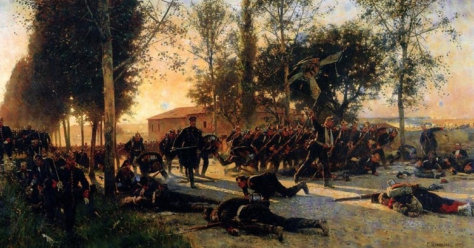

"Военные поучения" Хельмута фон Мольтке
Автор статьи: Максим Вахминцев
Опубликовано: 14 июня 2022
Опубликовано: 14 июня 2022
Статья в группе ВК Историческая империя: https://clck.ru/3M6UNC
Объединение Германии в 1871 году было бы невозможно без активного участия прусской армии и ее наиболее выдающихся военачальников. Фридрих Великий, Клаузевиц, Блюхер, Шарнхорст, Гнейзенау – все они сыграли решающую роль в становлении армии Пруссии как одной из сильнейших в Европе. Но особое место среди них занимает Хельмут фон Мольтке – начальник Большого Генерального штаба Пруссии и Германии и, по сути, архитектор побед прусской армии в объединительных войнах 1864-1871 гг.
Сегодня предлагаю ознакомиться со взглядами Хельмута фон Мольтке на тактику и стратегию, сыгравшими, наряду с тезисами Альфреда фон Шлиффена, решающую роль в становлении германской военной мысли, а также оказавшими большое влияние на развитие мировой военной теории.
Объединение Германии в 1871 году было бы невозможно без активного участия прусской армии и ее наиболее выдающихся военачальников. Фридрих Великий, Клаузевиц, Блюхер, Шарнхорст, Гнейзенау – все они сыграли решающую роль в становлении армии Пруссии как одной из сильнейших в Европе. Но особое место среди них занимает Хельмут фон Мольтке – начальник Большого Генерального штаба Пруссии и Германии и, по сути, архитектор побед прусской армии в объединительных войнах 1864-1871 гг.
Сегодня предлагаю ознакомиться со взглядами Хельмута фон Мольтке на тактику и стратегию, сыгравшими, наряду с тезисами Альфреда фон Шлиффена, решающую роль в становлении германской военной мысли, а также оказавшими большое влияние на развитие мировой военной теории.
Целью войны Мольтке считал захват государства, целью операции (операционным объектом – неприятельскую армию).
Все решения, принимаемые по ходу войны, есть результат:
- личной воли полководца, своими глазами наблюдающего за ходом боя и выслушивающего мнения советников – по Мольтке даже не самое идеальное, но централизованное решение может принести успех;
- военного творчества, а не заранее подготовленного плана.
Факторы этих решений:
- воля полководца (величина известная);
- воля его противника (величина неизвестная);
- иное – погоды, местность, болезни и т. п.
Идеальным главнокомандующим Мольтке считает монарха как человека, несущего ответственность только перед Богом и самим собой и избавленного от любого политического стеснения.

.jpg){kind=link}
Франц фон Ленбах. Портрет Хельмута Карла, графа фон Мольтке (1898).
Фронт должен быть достаточно укреплен для ведения обороны, но не должен сковывать наступление или отступление войск. Для отступления войска должны иметь выгодную местность, избавленную, например, от дефиле – о том же писал и эрцгерцог Карл Тешенский.
Взгляд Мольтке на роль крепостей:
В условиях наличия массовых призывных армий на исход войны могут повлиять только крупные крепости, расположенные возле крупных рек и прикрывающие коммуникации. Большие крепости имеют превосходство в огневой мощи + их нельзя обойти с флангов. Огонь крепостей может заставить противника маневрировать и, в случае активных вылазок наших войск, поставить того перед риском потерять все свои сообщения.

Взгляд Мольтке на роль крепостей:
- укрепления должны, в первую очередь, защищать пути снабжения;
- сами по себе крепости, без присутствия войск, слабы и не являются панацеей;
- наибольшее значение крепостные пункты имеют при обороне важных объектов, например столицы; нет смысла в мирное время строить на границе укрепленные лагери, которые можно обойти с флангов;
- не нужно излишне, чем того требуют задачи обороны города, расширять крепость;
- линейное расположение крепостей более выгодно, чем групповое, особенно при обороне рек;
- восстановление крепостей должно проводиться с точки зрения военной целесообразности и не иначе; строить крепости просто так – пустая трата денег и ресурсов;
- крепости должны помогать при обороне переправ, одновременно войска должны были вести контратаки на других участках;
- не крепости нужно строить возле железных дорог, а железные дороги проводить возле крепостей и переправ через большие реки.
В условиях наличия массовых призывных армий на исход войны могут повлиять только крупные крепости, расположенные возле крупных рек и прикрывающие коммуникации. Большие крепости имеют превосходство в огневой мощи + их нельзя обойти с флангов. Огонь крепостей может заставить противника маневрировать и, в случае активных вылазок наших войск, поставить того перед риском потерять все свои сообщения.
{kind=link}
Карл Рехлинг. Атака прусской пехоты при Сен-Прива. 1920.
Мольтке настаивал на:
Владение железными дорогами позволяет восстановить сообщение с осажденными крепостями. Самыми важными Мольтке считал те железнодорожные линии, что ведут к границе. Контроль над ними позволяет максимально быстро перебросить мобилизованные войска к фронту. Для выигрыша времени Мольтке советует уже в день предъявления ультиматума объявлять мобилизацию и отдавать приказ о выступлении войск.
Хельмута фон Мольтке-старшего не спроста считают одним из отцов-основателей германской концепции блицкрига. Фельдмаршал делал ставку на достижение стратегической внезапности, быструю мобилизацию войск, свободу маневра наступающих армий и максимальное использование железнодорожной сети. Эти принципы позволили прусской армии одержать победы в войнах с Данией, Австрией и Францией и в итоге совершить за 7 лет то, чего Габсбургская Австрия так и не смогла сделать за 400 предыдущих лет – объединить Германию.
Роль Мольтке в военной и политической истории Европы очень сложно переоценить. Фельдмаршал не только принес Пруссии величайшие победы в ее истории, но и фактически с нуля создал прусский Генеральный штаб – мозг германской армии, остававшейся в течение 70-ти лет после победы над Францией одной из сильнейших в мире.
Рекомендуемая литература
Мольтке, Г. К. Б. фон. Военные поучения: Оперативная подготовка к сражению. Пер. с нем., проверенный Е. И. Мартыновым. – Москва: Гос. воен. изд-во, 1936. – 311 с.
- максимальном использовании при наступлении полевой армии и частичном использовании резервных войск – ландвера;
- быстром проведении операций;
- отказе от малых магазинов как бессмысленных с точки зрения стратегии и создании больших магазинов на главных операционных линиях; наибольшую трудность генерал видел не в приобретении, а в доставке продовольствия;
- сохранении дистанции между наступающими группировками как для свободы маневра, так и предотвращения эпидемий;
- прокладке железных дорог как главных артерий войск при наступлении и обороне.
Владение железными дорогами позволяет восстановить сообщение с осажденными крепостями. Самыми важными Мольтке считал те железнодорожные линии, что ведут к границе. Контроль над ними позволяет максимально быстро перебросить мобилизованные войска к фронту. Для выигрыша времени Мольтке советует уже в день предъявления ультиматума объявлять мобилизацию и отдавать приказ о выступлении войск.
Хельмута фон Мольтке-старшего не спроста считают одним из отцов-основателей германской концепции блицкрига. Фельдмаршал делал ставку на достижение стратегической внезапности, быструю мобилизацию войск, свободу маневра наступающих армий и максимальное использование железнодорожной сети. Эти принципы позволили прусской армии одержать победы в войнах с Данией, Австрией и Францией и в итоге совершить за 7 лет то, чего Габсбургская Австрия так и не смогла сделать за 400 предыдущих лет – объединить Германию.
Роль Мольтке в военной и политической истории Европы очень сложно переоценить. Фельдмаршал не только принес Пруссии величайшие победы в ее истории, но и фактически с нуля создал прусский Генеральный штаб – мозг германской армии, остававшейся в течение 70-ти лет после победы над Францией одной из сильнейших в мире.
Рекомендуемая литература
Мольтке, Г. К. Б. фон. Военные поучения: Оперативная подготовка к сражению. Пер. с нем., проверенный Е. И. Мартыновым. – Москва: Гос. воен. изд-во, 1936. – 311 с.